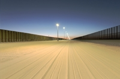
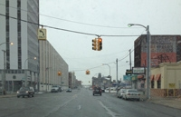
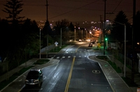

DOE shares the results of completed GATEWAY demonstration projects, publishing detailed reports that include analysis of data collected, projected energy savings, economic analyses, and user feedback. Report briefs summarize key findings in a quick-scan format. Both the reports and briefs are available as Adobe Acrobat PDFs.
Completed Outdoor Projects
LED Area Lighting Retrofit: Yuma Border Patrol
Along the Yuma Sector Border Patrol Area in Yuma, Arizona, the GATEWAY program conducted a trial demonstration in which the incumbent quartz metal halide area lighting was replaced with LED at three pole locations, and Illuminance measurements were recorded initially and at 2500 hours, 5000 hours, and 7000 hours of operation. An advanced optical system and lower pole height improved the initial illuminance uniformity, reduced stray light, and increased projected energy and maintenance cost savings, but the distribution of light produced by the LED luminaires changed considerably in the first 2500 hours of operation, and the trend continued after 5000 and 7000 hours of operation. This high luminous flux and high temperature application is not unique and similar applications can benefit from the findings of this installation.
Yuma Phase 1.2 Report (April 2016)
Yuma Phase 1.1 Report (April 2015)
Yuma Phase 1.0 Report (December 2014)
Yuma Phase 1 Brief
Philadelphia International Airport Apron Lighting: LED System Performance in a Trial Installation
This report documents a trial installation of LED apron lighting that replaced the existing high-pressure sodium luminaires at Philadelphia International Airport. Such high-mast applications remain challenging for LED technology, and the lessons learned from this project may help facility managers and LED product manufacturers better meet those challenges.
Philadelphia Airport Report (October 2015)
Philadelphia Airport Report Brief
Exterior LED Lighting Projects at Princeton University
This report focuses on four exterior solid-state lighting projects that have been completed at Princeton since 2008, when the University adopted a comprehensive sustainability plan. Through these initial projects – which include a parking garage, a pedestrian path, and two parking lot installations – the school’s facilities engineering staff learned important lessons about SSL technology and gained experience in dealing with the rapidly changing landscape of lighting manufacturers and their suppliers.
Princeton Exterior Lighting Report (October 2015)
Princeton Exterior Lighting Report Brief
Restoring Detroit’s Street Lighting System
The city of Detroit is in the midst of a comprehensive restoration of its street lighting system that includes transitioning the existing HPS sources to LED. This report provides an objective review of the circumstances surrounding the system restoration, the processes undertaken and decisions made, and the results so far — and contains useful information about issues that arise during large-scale LED street lighting projects.
Detroit Street Lighting Report (September 2015)
Investing in Their Future: Portland’s Purchase and Conversion of an LED Street Lighting System
During the ongoing process of converting its streetlights from high-pressure sodium to LED, the city of Portland, Oregon purchased a large portion of its street lighting system and encountered a range of issues among the stakeholders. This report identifies some of the challenges involved and discusses how they were addressed, in order to help inform and facilitate future lighting transitions elsewhere.
Portland Street Lighting Report (August 2015)
LED Roadway Lighting: I-35W Bridge
On the I-35W Bridge in Minneapolis, Minnesota, the GATEWAY program conducted a two-phase demonstration of LED roadway lighting on the main span, which is one of the country's oldest continuously operated exterior LED lighting installations. The Phase II report documents longer-term performance of the LED lighting system that was installed in 2008, and is the first report on the longer-term performance of LED lighting in the field. The Phase I report, published in August 2009, provides an overview of initial project results including lighting performance, economic performance, and potential energy savings. (September 2014)
I-35 Bridge Report, Phase II
I-35 Bridge Report, Phase II Brief
I-35 Bridge Report, Phase I
LED Street Lighting: Kansas City, Missouri
At nine sites in Kansas City, the DOE Municipal Solid-State Street Lighting Consortium evaluated nine different LED street lighting products and compared them to the high-pressure sodium (HPS) luminaires they replaced. This study illustrates many of the challenges involved in matching products to real-world applications, even under carefully maintained conditions. As a group, the LED products tended to be slightly more efficacious than their HPS counterparts, but a larger portion of the energy savings was achieved by reducing overall light levels and limiting spill light. (June 2013)
Kansas City Report
Kansas City Report Brief
LED Parking Structure Lighting: Washington, DC
At the parking structure of the U.S. Department of Labor headquarters in Washington, DC, LED luminaires were installed in place of the incumbent high-pressure sodium (HPS) luminaires and evaluated for relative light quantity and performance. Results showed energy savings of 52% from the initial conversion of HPS to LED—which increased to 88% by using occupancy sensor controls—and simple payback periods of 6.5 and 4.9 years for retrofit and new construction scenarios, respectively. (March 2013)
Department of Labor Report
Department of Labor Report Brief
LED Roadway Lighting Feasibility Assessment: Golden Gate Bridge
The GATEWAY program conducted a technical feasibility assessment of replacing existing roadway lighting on San Francisco's Golden Gate Bridge. Although there does not currently appear to be a simple means to reduce maintenance and energy use while preserving the quality and quantity of illumination for this historic landmark, both custom LED retrofit kits and fully-integrated LED luminaires are among the options that should be considered. (September 2012)
Golden Gate Bridge Report
LED Roadway Lighting: Philadelphia, Pennsylvania
At three sites in Philadelphia, the DOE Municipal Solid-State Street Lighting Consortium evaluated 10 different LED luminaires and compared them to the incumbent high-pressure sodium (HPS) luminaires. Most of the LED products had a higher rated luminous efficacy—and all of the LED products showed improved color rendering, had higher application efficacy, and drew less power—than their HPS counterparts. (September 2012)
Philadelphia Report
Philadelphia Report Brief
LED Post-Top Lighting: Central Park, New York City
Along paved walking trails in New York City's Central Park, LED post-top mounted luminaires from five different manufacturers were installed and evaluated against the existing metal halide luminaires. Energy savings ranged from 50% to 83% relative to the baseline luminaire, and issues concerning spacing, illuminance, distribution, and color quality highlighted important considerations when evaluating lighting performance in walkway applications. (September 2012)
Central Park Report
Central Park Report Brief
LED Roadway Lighting: Portland, Oregon
On a residential collector road in Portland, six different types of roadway luminaires were installed in side-by-side groupings and evaluated for initial performance: three LED, one induction, one ceramic metal halide, and one baseline high-pressure sodium. While the overall performance of the alternative luminaires was generally better than the baseline luminaire, cost remains a significant barrier to widespread adoption. (June 2012—Revised August 2012)
Cully Boulevard Report
Cully Boulevard Report Brief
LED Roadway Lighting: New York, New York
On Franklin D. Roosevelt Drive in New York City, LED luminaires from four different manufacturers were compared to the incumbent high-pressure sodium (HPS) luminaires and evaluated for relative light output and performance. Although energy savings ranged from 26 to 57 percent compared to the incumbent HPS, with a high potential for improvement in illumination quality, the report shows how life-cycle costs would need to improve to economically justify an investment in solid-state lighting for many roadway lighting applications. (December 2011)
FDR Drive Report
LED Ornamental Post-Top Street Lights: Sacramento, California
The DOE Municipal Solid-State Street Lighting Consortium evaluated four different LED replacements for existing ornamental post-top street lights in Sacramento using computer simulations, field measurements, and laboratory testing. The study was restricted to retrofit or integrated replacement products that would either fit into the existing acorn fixture, or be similar in daytime appearance. This challenge proved formidable, as the results indicate that none of the LED products evaluated would be cost-effective replacements for the existing 100W HPS luminaires. (December 2011)
Sacramento Street Light Report
LED Parking Lot Lighting: Leavenworth, Kansas
At a new Walmart Superstore in Leavenworth, Kansas, LED parking lot luminaires were installed that achieved a 63% energy savings against a theoretical baseline (since the site was new construction, no baseline system was actually installed). Simple payback for the LED system was 6.1 or 7.5 years, depending on the respective hypothetical baseline. (May 2011)
Walmart Report
LED Parking Lot Lighting: Manchester, New Hampshire
In a shopping plaza parking lot in Manchester, New Hampshire, high-pressure sodium and metal halide luminaires were replaced with LED luminaires controlled by integral occupancy sensors that vary between "high" and "low" light output settings. The LED luminaires achieved energy savings of 58% and an estimated payback of around three years at this location, where electricity and maintenance costs for the existing lights are relatively high. (June 2010)
T.J.Maxx Report
T.J.Maxx Report Brief
LED Roadway Lighting: Palo Alto, California
In Palo Alto, California, seven LED and three induction streetlight luminaires replaced high-pressure sodium (HPS) luminaires on two residential streets, and two LED and two induction luminaires were installed on a commercial street to test a remote streetlight monitoring system. Of the three systems, LED used the least energy (44% reduction compared to HPS). Simple payback was estimated to be around 12 years for retrofitting existing HPS with an LED luminaire, and 10 years in a new construction scenario. (June 2010)
Palo Alto Report
Palo Alto Report Brief
LED Street Lighting: Lija Loop, Portland
On Lija Loop, a residential street in Portland, Oregon, eight high-pressure sodium cobra head fixtures were replaced with LED street light luminaires. Project results included an estimated payback of 7.6 years for new installations and 20 for replacement scenarios. (November 2009)
Lija Loop Report
LED Parking Lot Lighting: Raley's Supermarket
At a Raley's Supermarket in West Sacramento, California, several metal halide (MH) luminaires were replaced with new LED luminaires incorporating bi-level operation (dim state and full state) controlled by motion detectors. Results indicated an energy savings potential approaching 70% on an annual basis, a more uniform lighting distribution, and payback periods of less than five years. (February 2009)
Raley's Report
LED Street Lighting: City of San Francisco
In the Sunset District of San Francisco, four manufacturers' LED street lights were installed on four public avenues to replace 100-watt nominal high-pressure sodium luminaires, independently demonstrating the performance of a number of currently available products in one specific application. (December 2008)
San Francisco Report
LED Parking Garage Lighting: Providence Portland Medical Center (PPMC)
With an eye on replacing its aging stock of luminaires campus-wide, PPMC wanted to evaluate more energy-efficient lighting options. In this project, PPMC replaced several high-pressure sodium fixtures in the hospital parking garage with LED luminaires, enabling a side-by-side comparison of the lighting performance, quality, energy savings, and user feedback. (November 2008)
PPMC Report
PPMC Report Brief
LED Walkway Lighting: Federal Aviation Administration (FAA) Technical Center
At the FAA Technical Center in Atlantic City, New Jersey, six modular LED luminaires were installed along exterior walkways, replacing six high-pressure sodium luminaires. Project results include photometric data, projected energy savings, payback analysis, and user feedback on perceived improved visibility. (March 2008)
FAA Report
FAA Report Brief
LED Street Lighting: City of Oakland
The City of Oakland wanted to assess the energy, economic, and safety impacts of replacing high-pressure sodium (HPS) street lights with LED luminaires. This project involved installation of 15 LED street lights – ten on the LED-only street and five on the LED/HPS street. (Phase III, November 2008; Phase II, January 2008)
Oakland Report, Phase III
Oakland Report Phase II
Oakland Report Brief Phase II